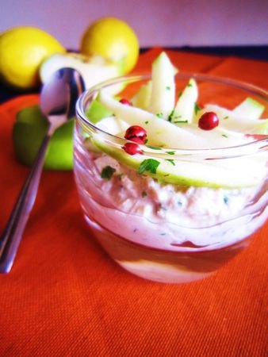

Verrines et cuillères
Ingrédients
- 2 avocat
- 1 c. à s. de fromage frais
- 1 c. à s. de Boursin
- 2 tranches de saumon
- citron
- ciboulette
- 1 betterave
- 1 c. à s. de ricotta
- ail
- sel
- poivre
- 1 c. à s. de crème fraîche
- 2 c. à s. d'huile d'olive
- 1 tranche de pain de mie aux céréales
- Saint Moret
- 1 tranche de saumon fumé
- aneth
- 0.5 mangue
- 3 -4 feuilles de mâche
- vinaigre balsamique
- 1 pavé de saumon
- 0.25 d'oignon jaune
- 0.5 citron
- 1 c. à c. de sauce soja
- graines de sésame

Plusieurs idées de verrines froides.
Préparation
Étape 1
Avocat saumon : écraser 1 avocat avec 1 c. à s. de fromage frais et 1 c. à s. de Boursin. Ajouter 2 tranches de saumon en morceaux, citron et ciboulette.
Étape 2
Betterave : mixer 1 betterave, 1 c. à s. de ricotta, ciboulette, ail, sel et poivre. Option : 1 c. à s. de crème fraîche et 1 c. à s. d'huile d'olive.
Étape 3
Pour 4 verrines : au fond, 1 tranche de pain de mie aux céréales tartinée de Saint Moret. Superposer 1 avocat en dés, 1 tranche de saumon fumé arrosée de citron et d’aneth, 0.5 mangue en petits cubes, 3 -4 feuilles de mâche et un filet de vinaigre balsamique.
Étape 4
Tartare : couper en petits cubes 1 pavé de saumon. Ajouter 0.25 d'oignon jaune très émincé, ciboulette, le jus d’0.5 citron, sel, poivre, 1 c. à s. d'huile d'olive, 1 c. à c. de sauce soja et des graines de sésame.
Conseils
- Autres idées : avocat, tomates séchées, mozzarella, pignons ; Saint Moret, thon, pêches au sirop.
- Le Saint Moret du fond peut être remplacé par de la crème fraîche citron ciboulette.